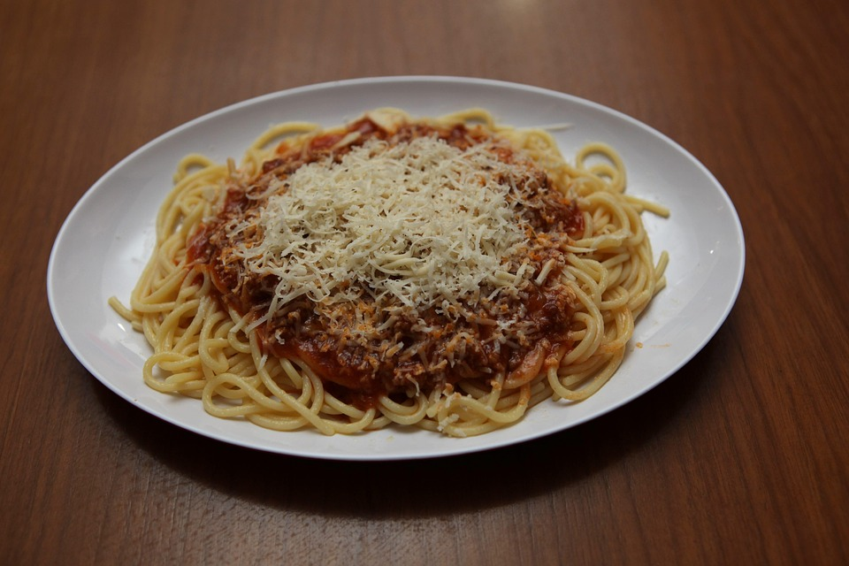

Home
Bolognese

Description
Bolognese is the most famous italian pasta recipe. Known for it's red sauce and fingerlicking taste.
Ingredients
- Olive oil
- Carrots
- Celery
- Onion
- Heavy cream
- Ground beef
- Marinara sauce
- Pasta of choice
Steps
- Fry the carrots, celery and onion.
- Stir in the beef.
- Pour in your jar of marinara sauce.
- Simmer over the course of 30 minutes, the sauce will thicken and cook down.
- When the sauce has reached your desired thickness, stir in the heavy cream.
- Boil some water for the pasta during the last 30 minutes of that simmer.
- Mix it all.
- Eat!